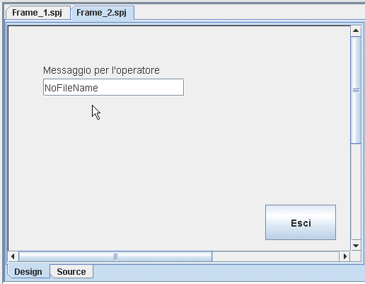
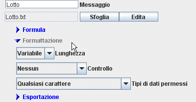
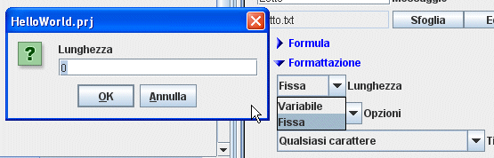
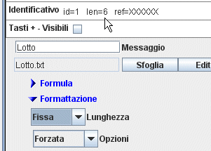
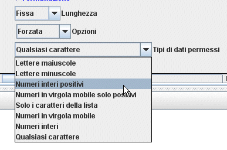
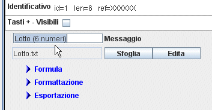

Input da TestieraUna delle cose più comuni di un progetto è l'inserimento di dati manuali da parte dell'utilizzatore. Per fare questo è neceserraio avere una finestra in cui è possinìbile scrivere. Per mostrare come si fa, faremo riferimento all'esempio HelloWorld. Inseriremo due finestre, per inserire Lotto e Note, nel Frame_2. Cliccare sul menu "Testo" nella
sezione "Inserimento Dati" (1), poi portarsi
con il mouse sul Frame_2 (2), e cliccare per inserire il
Componente (3).
|
(3)  |
La finestra ora inserita deve essere configurata per salvare il contenuto in un file. |
Proprietà Testo (inserimento dati)
|
Opzioni di Formattazione.In alcuni casi è comodo impedire che l'operatore inserisca valori "non ammessi". Per fare questo possiamo usare le opzioni di formattazione, cliccando sul triangolino a sinistra che permette di scoprire le varie opzioni.  |
LunghezzaPer default la lunghezza è variabile, in
questo modo non viene fatto nessun controllo sulla
lunghezza.  |
A questo punto, vedremo che le informazioni relative all'identificativo, si sono aggiornate e la lunghezza risulta 6.  |
Lunghezza Fissa ForzataPer ottenere che la lunghezza sia 6 caratteri, possimo scegliere Forzata. In questo modo gli eventuali pulsanti di conferma, presenti nel frame verranno disabilitati e verranno riabilitati, solo se i caratteri inseriti saranno quelli giusti. |
Lunghezza Fissa CompletataQuesta opzione completa automaticamente il testo inserito con dei caratteri a destra o a sinistra in base alle opzioni scelte. |
Tipi di dati permessiPer "imporre" che nella finestra di testo siano inseriti solo numeri, nel campo tipo di dati permessi, selezioniamo Numeri interi positivi.  |
Per completare l'esempio HelloWorld inseriremo, nel campo Messaggio, l'informazione (6 numeri), per guidare l'operatore nell'inserimento dei dati.  |